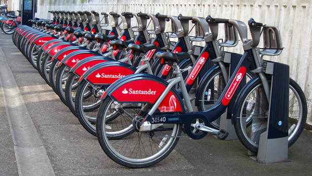
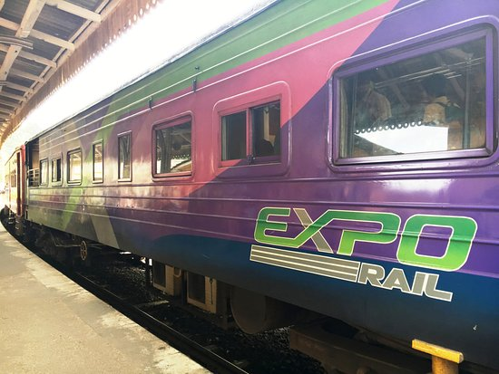
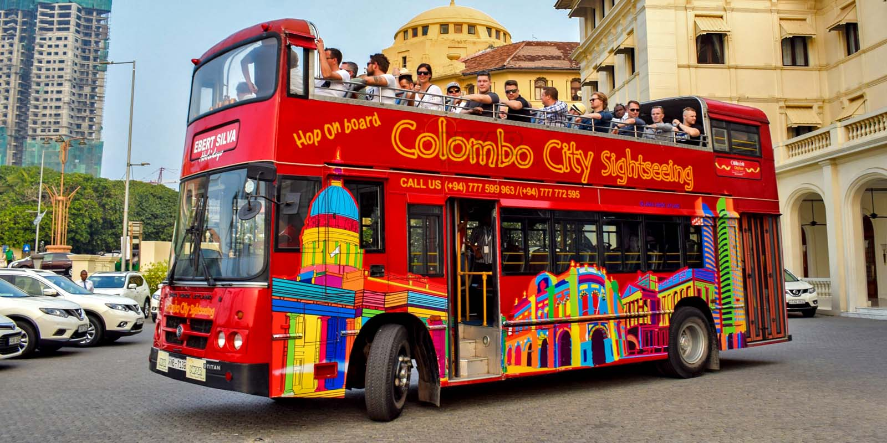

|
 |  |  |
Taxi Operators There are many taxi services that operate in Sri Lanka. They range from luxury cars and SUVs to the very popular mini Tata Nano cars used by many taxi services. You can easily spot these mini taxis due to their bright colours of red, yellow and silver and the equally bright display of call-up numbers. More information |
Clean City Cycle Club Clean City Cycle Club was conceptualised in 2011 and was incorporated as a company in April 2012. There are multifarious motivational factors that drove us to pursue this initiative, some personal and others based on business sense. More information |
Expo Rail Expo Rail is a first of its kind luxury train operation in Sri Lanka which raised the bar of excellence and redefined Rail Travel in the country. Coming into operation with a daily super luxury carriage service on the regular Colombo-Kandy intercity train, Expo Rail now operates on 4 major routes covering more than 60 key destinations. More information |
Colombo City Tour It is Sri Lankas first open deck city tour of Colombo, with visits to the hot spots in Colombo. An experienced tour guide entertains and educates you as you take in the sights and sounds of the city, and the big red double-decker bus just adds to the charm of experiencing Colombo. More information |